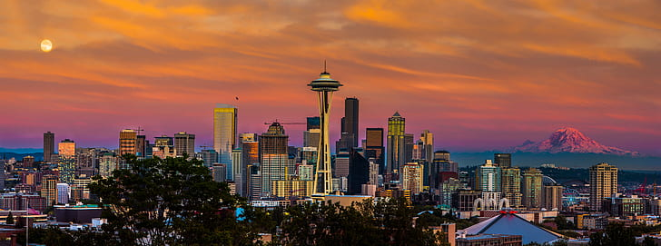
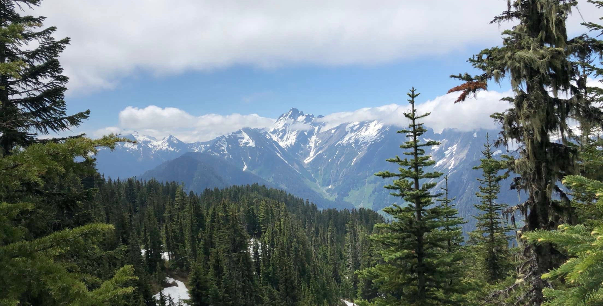

Seattle is a seaport city on the West Coast of the United States. It is the seat of King County, Washington. Seattle is the largest city in both the state of Washington and the Pacific Northwest region of North America. According to U.S. Census data released in 2019, the Seattle metropolitan area's population stands at 3.98 million, and ranks as the 15th-largest in the United States.
Seattle's economy is driven by a mix of older industrial companies, and "new economy" Internet and technology companies, service, design, and clean technology companies. The city's gross metropolitan product (GMP) was $231 billion in 2010, making it the 11th largest metropolitan economy in the United States.
Large companies continue to dominate the business landscape. Five companies on Fortune 500's 2017 list of the United States' largest companies (based on total revenue) are headquartered in Seattle: Internet retailer Amazon.com, coffee chain Starbucks, department store Nordstrom, forest products company Weyerhaeuser and freight forwarder Expeditors International of Washington. Seattle is considered to be another "hub" of engineering and several engineers go to Seattle after graduating.
Seattle is one of the most literate cities among the major cities in the United States. Of the city's population over the age of 25, 53.8% (vs. a national average of 27.4%) hold a bachelor's degree or higher, and 91.9% (vs. 84.5% nationally) have a high school diploma or equivalent. A 2008 United States Census Bureau survey showed that Seattle had the highest percentage of college and university graduates of any major U.S. city. The city was listed as the most literate of the country's 69 largest cities in 2005 and 2006, the second most literate in 2007 and the most literate in 2008 in studies conducted by Central Connecticut State University.
The following picture was taken by Sarah Russ during her trip to Seattle.

The Cascade Range (which can be seen in the pictures above) is one of Seattle's most popular tourist attractions. It is approximately 59 miles south south-east of Seattle. It's highest point is Mount Rainier (the mountain photographed in the pictures above). Mt Rainier is considered to be one of the most dangerous volcanoes in the world. It is ranked third of the 128 ultra-prominent mountain peaks of the United States.
Sarah has been kind enough to provide us with a picture of the Cascade Range:
